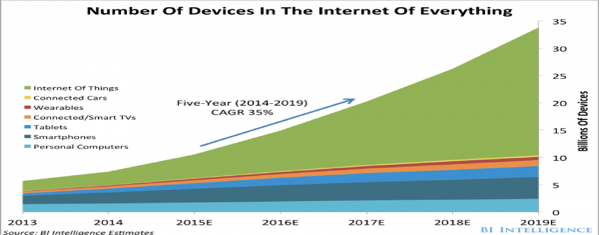

ما هو إنترنت الأشياء؟
يتردد خلال الآونة الأخيرة مصطلح إنترنت الأشياء أو Internet of Things (IoT) بصورة متكررة فلا يخلوا أي مؤتمر لشركات التقنية دون الحديث عنه بل الأمر وصل إلى كل الأجهزة الجديدة كانت متعلقة بالتقنية أو غير متعلقة بها, فما هو إنترنت الأشياء؟ وما الفائدة منه؟ وما هي تطبيقاته؟ أسئلة كثيرة تدور حول هذا المصطلح الجديد والمتشعب نناقشها معكم في موضوعنا التالي عن IoT.
| 2014 | 2015 | 2016 | 2017 | 2018 | |
| حجم الاسثمار فى انترنت الاشياء بالمليون دولار | 231.6 | 281.8 | 348.31 | 433.95 | 547.2 |

يشير مصطلح إنترنت الأشياء إلى كل الأجهزة -مهما كان نوعها- التي يمكن اتصالها بالإنترنت وإرسال واستقبال المعلومات دون تدخل العامل البشري, هذا الأمر أصبح متاح على أي جهاز بسبب صناعة المعالجات وشبكات الاتصالات اللاسلكية المزدهرة فبإضافة معالج وشريحة اتصال لاسلكية لم تعد عقبة ولن تستغل عدة سنتيمترات في أي جهاز مهما كان.
إمكانية توصيل الأجهزة بالإنترنت وتبادلها للبيانات يضيف لمسة من الذكاء إلى أي جهاز تقليدي ليزيد من مهامه وذكاءه دون التغير في المفهوم الذي صمم من أجله كما أن هذا الأمر يعزز من الاتصال بين العالم الرقمي والعالم الحقيقي بسهولة أكبر مما هو عليه الآن.
آلية عمل انترنت الأشياء
كمثل فكرة أمان المنازل: سيتحقق جهاز إنترنت الأشياء الخاص بنا مما إذا كان هناك أي متسللين في منزلنا باستخدام نظام الرؤية الحاسوبية (أجهزة الاستشعار). ثم يتم إرسال تسجيلات الفيديو الخاصة بالمنزل إلى السحابة لمعرفة ما إذا كان هناك أي متسللين أم لا (اتصال). ثم تتم معالجة البيانات في السحابة (معالجة البيانات). وإذا تم اكتشاف بعض المتسللين يتم تنبيهنا (واجهة المستخدم).
ة
العالم في راحة يدك
بدءًا من تخزين مقاطع مصوّرة، أو كتب إلكترونية، على سحابة تخزين، وإمكانية فتحها و تشغيلها من أي جهاز متصل بالإنترنت في أي مكان في العالم، إلى إمكانية التحكم بجميع الأجهزة المنزلية من خلال هواتفكم المحمولة، وأنتم تقضون الإجازة الأسبوعية بعيدًا عن المنزل، وصولاً إلى الآلات المعقّدة وأجهزة التحكّم الصناعي، ووسائل النقل والمواصلات، يؤثر إنترنت الأشياء بطريقة ثورية على أسلوب حياتنا، وطريقة عمل وإدارة قطاعات الأعمال على اختلاف أنواعها ومستوياتها، سواء في المصانع أو المؤسسات التعليمية أو المستشفيات، حيث يؤدي التكامل وتشارك المعلومات والبيانات بين أجزاء الأنظمة المختلفة، والتحكم عن بعد بالأجهزة والآليات، إلى نتائج أكثر جودة، مع التقليل من تكاليف التطوير والتنقل والصيانة، وتحسين جودة حياة السكان، وتقليل استهلاك الطاقة والمياه، وتوفير موارد الطبيعة، والحفاظ على البيئة، إضافة إلى تحسين الأمن، من خلال أنظمة المراقبة الذكيّة وأجهزة الإنذار المتطورة.
ولعل الأكثر تشويقًا وإثارةً أن تتحول منازلنا إلى منازل ذكية، يمكننا التحكم بها من خلال إنترنت الأشياء، بحيث نراقب جميع الأجهزة في المنزل من خلال تطبيقات متصلة بالإنترنت، تتلقى الإشارات من هذه الأجهزة وتستقبل أوامر التشغيل أو تتصرف بمفردها بناء على معطيات سابقة.
حياة ذكيّة بدأنا نعيشها، وقد نجدها في وقت قريب في كل بيت، ستجعلنا نتحكم بالكثير من الأشياء وننجز أعمالنا بشكل كامل من خلال أجهزة صغيرة نحملها في جيوبنا، فما كان جزءًا من أفلام الخيال العلمي أصبح واقعًا قريبًا من الجميع.